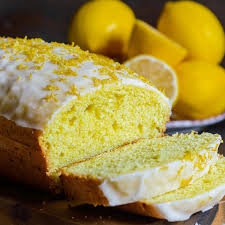

About the Recipe:
- Preparation Time: 15 mins
- Cooking Time: 45 mins
- Level of difficulty: Easy
- Number of servings: 6
|
 |
Ingredients:
- 225g unsalted butter
- 180g caster sugar
- 4 eggs
- 225g self-raising flour
- 1 lemon, zested
- 2 lemons, juiced
- 65g caster sugar
Recipe for the cake:
- Pre-heat the oven to 180°C.
- Beat together the butter and caster sugar until creamy, then add the eggs, one at a time, slowly mixing through.
- Sift in the self-raising flour, then add the lemon zest and mix until well combined.
- Line a loaf tin (8 x 21cm) with greaseproof paper, then pour in the mixture and level the top with a spoon.
- Bake for 45 to 50 minutes.
Recipe for the lemon drizzle:
- Mix the lemon juice and caster sugar to make the drizzle.
- Prick the cake all over with a fork, then pour over the drizzle - Let the juice sink in. The sugar will form a sweet, crisp topping.
- Leave the cake in the tin until completely cool before serving.
Finding more recipes online:
You will more recipes on the BBC Good Food website: https://www.bbcgoodfood.com/